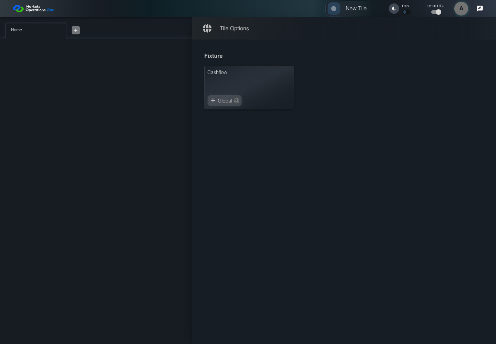
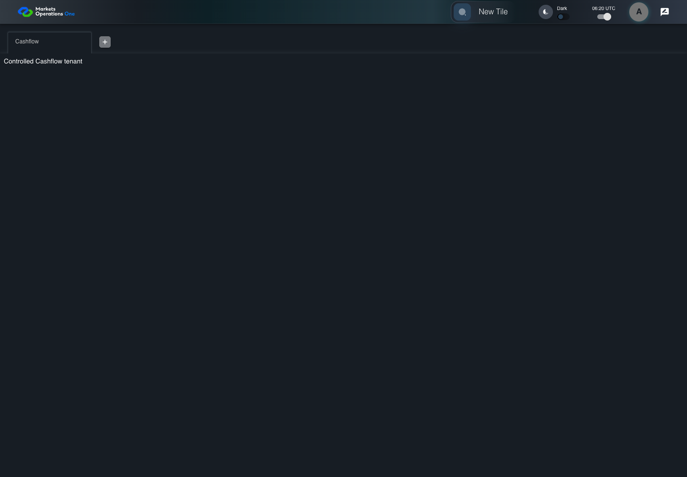

UX-060 open Cashflow and profile
FAIL · application/run-051-edge-final/ux-060-open-cashflow-and-profile-8597ecad4659-attempt-1 · ACTUAL_APPLICATION_LOCAL_SERVICES
Actual React shell in Installed Microsoft Edge; controlled accepted identity and Cashflow SystemJS module. Firefox uses explicit direct-local transport after inherited proxy navigation returned HTTP503. External requests remain blocked. Real identity and business tenant results remain unverified. Firefox and WebKit use Playwright automation builds. WebKit execution does not establish Safari product compatibility.
2026-10-22T06:20:00.963Z to 2026-10-22T06:20:08.939Z
Assertions and result · Artifact manifest · Exact run inputs and source hashes
Result SHA-256:68c6b63f7779b8a411493894dc05bfa124c1c14cb54b6b48405865081a000967Retained failure details
[
{
"message": "Error: \u001b[2mexpect(\u001b[22m\u001b[31mlocator\u001b[39m\u001b[2m).\u001b[22mtoHaveValue\u001b[2m(\u001b[22m\u001b[32mexpected\u001b[39m\u001b[2m)\u001b[22m failed\n\nLocator: getByTestId('MicroWebUI_base_home').getByRole('tablist', { name: 'workspaces', exact: true }).getByRole('tab', { selected: true }).getByRole('textbox')\nExpected: \u001b[32m\"Cashflow\"\u001b[39m\nReceived: \u001b[31m\"Cashflow\u001b[7m \u001b[27m\"\u001b[39m\nTimeout: 5000ms\n\nCall log:\n\u001b[2m - Expect \"toHaveValue\" getByTestId('MicroWebUI_base_home').getByRole('tablist', { name: 'workspaces', exact: true }).getByRole('tab', { selected: true }).getByRole('textbox') with timeout 5000ms\u001b[22m\n\u001b[2m - waiting for getByTestId('MicroWebUI_base_home').getByRole('tablist', { name: 'workspaces', exact: true }).getByRole('tab', { selected: true }).getByRole('textbox')\u001b[22m\n\u001b[2m 14 \u00d7 locator resolved to <input type=\"text\" id=\"edit-W1\" value=\"Cashflow \" aria-invalid=\"false\" aria-label=\"Workspace Name\" class=\"MuiInputBase-input MuiInput-input MuiInputBase-inputSizeSmall css-4zzs6-MuiInputBase-input-MuiInput-input\"/>\u001b[22m\n\u001b[2m - unexpected value \"Cashflow \"\u001b[22m\n",
"stack": "Error: \u001b[2mexpect(\u001b[22m\u001b[31mlocator\u001b[39m\u001b[2m).\u001b[22mtoHaveValue\u001b[2m(\u001b[22m\u001b[32mexpected\u001b[39m\u001b[2m)\u001b[22m failed\n\nLocator: getByTestId('MicroWebUI_base_home').getByRole('tablist', { name: 'workspaces', exact: true }).getByRole('tab', { selected: true }).getByRole('textbox')\nExpected: \u001b[32m\"Cashflow\"\u001b[39m\nReceived: \u001b[31m\"Cashflow\u001b[7m \u001b[27m\"\u001b[39m\nTimeout: 5000ms\n\nCall log:\n\u001b[2m - Expect \"toHaveValue\" getByTestId('MicroWebUI_base_home').getByRole('tablist', { name: 'workspaces', exact: true }).getByRole('tab', { selected: true }).getByRole('textbox') with timeout 5000ms\u001b[22m\n\u001b[2m - waiting for getByTestId('MicroWebUI_base_home').getByRole('tablist', { name: 'workspaces', exact: true }).getByRole('tab', { selected: true }).getByRole('textbox')\u001b[22m\n\u001b[2m 14 \u00d7 locator resolved to <input type=\"text\" id=\"edit-W1\" value=\"Cashflow \" aria-invalid=\"false\" aria-label=\"Workspace Name\" class=\"MuiInputBase-input MuiInput-input MuiInputBase-inputSizeSmall css-4zzs6-MuiInputBase-input-MuiInput-input\"/>\u001b[22m\n\u001b[2m - unexpected value \"Cashflow \"\u001b[22m\n\n at /Users/lushevol/code/github/ratan-release-impact/workbench/e2e/audit-specs/browser-compatibility.spec.ts:45:122\n at AuditCapture.step (/Users/lushevol/code/github/ratan-release-impact/workbench/e2e/support/audit-fixture.ts:94:21)\n at /Users/lushevol/code/github/ratan-release-impact/workbench/e2e/audit-specs/browser-compatibility.spec.ts:45:4",
"location": {
"file": "/Users/lushevol/code/github/ratan-release-impact/workbench/e2e/audit-specs/browser-compatibility.spec.ts",
"column": 122,
"line": 45
},
"snippet": " 43 | await audit.step(6,async()=>{await page.getByTestId(`${localPrefix}_new_tile`).click();});\n 44 | await audit.step(7,async()=>{await drawer.getByTestId(`${localPrefix}_tile`).getByText('Cashflow',{exact:true}).click();});\n> 45 | await audit.step(8,async()=>{await expect(portal.workspaceList.getByRole('tab',{selected:true}).getByRole('textbox')).toHaveValue('Cashflow');});\n | ^\n 46 | await audit.step(9,async()=>{await portal.clickAvatarButton();});\n 47 | await audit.step(10,async()=>{await portal.clickProfileMenuItem();});\n 48 | await audit.step(11,async()=>{await expect(page.getByText('User Profile',{exact:true})).toBeVisible();});"
}
]Machine observations
- browser-environment.json
6572c85fe57fbd73eb6150e4e927c20988a632c7b4475fbd37ef6a5171ea471e
Screenshot capture: CAPTURED. Named frames: 9.
Step screenshot bindings: INCOMPLETE. 8/13 canonical steps have execution screenshots.
Bindings measure structural coverage only. They do not establish screenshot content quality or relevance.
Screenshot content review: NOT_REVIEWED. Recorded context: 0/9 frames. Identical image bytes: 1 repeated frames. Recorded context does not establish human visual review.
Step 9 has no screenshot from an executed step. Step 10 has no screenshot from an executed step. Step 11 has no screenshot from an executed step. Step 12 has no screenshot from an executed step. Step 13 has no screenshot from an executed step.
Canonical step timeline
Given USER-A has a clean Microsoft Edge context, username USER-A, synthetic password FixturePass1!, and a controlled Cashflow tile
Execution: PASSED.
1. step-01 Visible state after step 1: Given USER-A has a clean Microsoft Edge context, username USER-A, synthetic password FixturePass1!, and a controlled Cashflow tile
2026-10-22T06:20:02.624Z · 1440×1000
Step: /Users/lushevol/code/github/ratan-release-impact/workbench/tasks/ui-test-coverage-20261022/test-cases.md:14212
SHA-256:99567bb3808af958792a6b38879d848938c08b417fb7dfff75bde75fcbd51a3aWhen USER-A types "USER-A" into the textbox with identifier "Enter Username" in the sign-in form on the Login page
Execution: PASSED.
2. step-02 Visible state after step 2: When USER-A types "USER-A" into the textbox with identifier "Enter Username" in the sign-in form on the Login page
2026-10-22T06:20:02.744Z · 1440×1000
Step: /Users/lushevol/code/github/ratan-release-impact/workbench/tasks/ui-test-coverage-20261022/test-cases.md:14213
SHA-256:923f3a8f3fadb27449d0e4d9496d01fb6acb4609b0bba9ca4ea76bc57d1ca7e1And USER-A types "FixturePass1!" into the text input with identifier "Enter Password" in the sign-in form on the Login page
Execution: PASSED.
3. step-03 Visible state after step 3: And USER-A types "FixturePass1!" into the text input with identifier "Enter Password" in the sign-in form on the Login page
2026-10-22T06:20:02.877Z · 1440×1000
Step: /Users/lushevol/code/github/ratan-release-impact/workbench/tasks/ui-test-coverage-20261022/test-cases.md:14214
SHA-256:87b26b5eaabb2738bc4ebc87157ce52264a0c8fcae5cdd52733bb9ca9d03c05bAnd USER-A clicks the button labelled "Sign In" in the sign-in form on the Login page
Execution: PASSED.
4. step-04 Visible state after step 4: And USER-A clicks the button labelled "Sign In" in the sign-in form on the Login page
2026-10-22T06:20:03.051Z · 1440×1000
Step: /Users/lushevol/code/github/ratan-release-impact/workbench/tasks/ui-test-coverage-20261022/test-cases.md:14215
SHA-256:e7be2a77bd18fcb2fd041365622eca465da886eb8e22228a3482a6bb30d6ee13Then The section labelled "New Tile" on the Home page is visible
Execution: PASSED.
5. step-05 Visible state after step 5: Then The section labelled "New Tile" on the Home page is visible
2026-10-22T06:20:03.114Z · 1440×1000
Step: /Users/lushevol/code/github/ratan-release-impact/workbench/tasks/ui-test-coverage-20261022/test-cases.md:14216
SHA-256:3871d870b14f33354ac6d5493639e852ebb1cab8b31ffec1ea6884a711514297When USER-A clicks the section labelled "New Tile" on the Home page
Execution: PASSED.
6. step-06 Visible state after step 6: When USER-A clicks the section labelled "New Tile" on the Home page
2026-10-22T06:20:03.230Z · 1440×1000
Step: /Users/lushevol/code/github/ratan-release-impact/workbench/tasks/ui-test-coverage-20261022/test-cases.md:14217
SHA-256:7c482c89b117432eed56dea6687e830a4fe61ea615250aa80c8abf134d3fce0dAnd USER-A clicks the section labelled "Cashflow" in the Tile Options panel on the Home page
Execution: PASSED.7. step-07 Visible state after step 7: And USER-A clicks the section labelled "Cashflow" in the Tile Options panel on the Home page
2026-10-22T06:20:03.314Z · 1440×1000
Step: /Users/lushevol/code/github/ratan-release-impact/workbench/tasks/ui-test-coverage-20261022/test-cases.md:14218
SHA-256:f2e994877efecf66b8fde35084d26d07c40edcc8662a513f43c4ecb0e890983fThen The tab labelled "Cashflow" in the tablist named "workspaces" on the Home page is selected
Execution: FAILED.
8. step-08-failure Visible state when step 8 failed. Later steps did not execute.
2026-10-22T06:20:08.397Z · 1440×1000
Step: /Users/lushevol/code/github/ratan-release-impact/workbench/tasks/ui-test-coverage-20261022/test-cases.md:14219
SHA-256:f202ee5727186cab1f9e94c5390b4a3dd71731e476aac140c5a6a31ef28fdb7bWhen USER-A clicks the icon button with test ID "${MFE_APP_PREFIX_STYLE}_avatar_IconButton" on the Home page
Execution: NOT_EXECUTED.No screenshot is recorded for this step. No executed state is claimed.
And USER-A clicks the menu item with test ID "${MFE_APP_PREFIX_STYLE}_avatar_Profile" in the menu with identifier "menu-appbar-avatar" on the Home page
Execution: NOT_EXECUTED.No screenshot is recorded for this step. No executed state is claimed.
Then The dialog labelled "User Profile" on the Home page is visible
Execution: NOT_EXECUTED.No screenshot is recorded for this step. No executed state is claimed.
And The profile identity text contains "USER-A"
Execution: NOT_EXECUTED.No screenshot is recorded for this step. No executed state is claimed.
And The tab labelled "Cashflow" in the tablist named "workspaces" on the Home page remains visible
Execution: NOT_EXECUTED.No screenshot is recorded for this step. No executed state is claimed.
Additional named frames

The visible state when the test failed.
2026-10-22T06:20:08.467Z · 1440×1000Step: Test source: /Users/lushevol/code/github/ratan-release-impact/workbench/e2e/audit-specs/browser-compatibility.spec.ts:22
SHA-256:
f202ee5727186cab1f9e94c5390b4a3dd71731e476aac140c5a6a31ef28fdb7bImage bytes match frame 8. An unchanged image can be valid for consecutive assertions. This match does not establish correct step content.
Screenshots establish visible state only. Assertions and traces support functional claims.